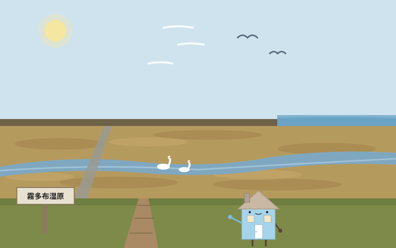
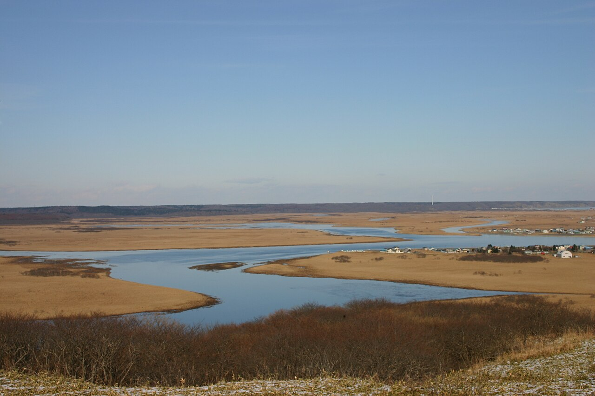
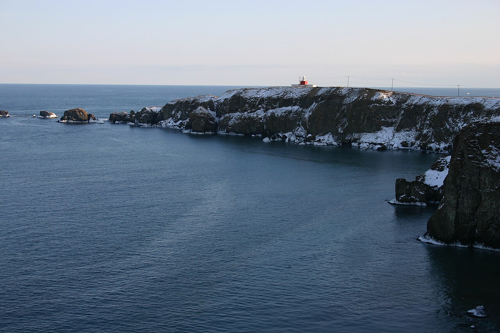

Day 23：浜中町

琵琶瀬展望台の柵に手をかけると、風がまず頬に当たった。目の前には、茶色い草の海が地平線まで広がっている。川が一筋、鈍い光を引いて蛇行し、その先に海が白く光っている。11月の霧多布湿原だ。空は澄んでいて、霧の気配はなかった。「霧多布」と聞いたとき、私は一日中霧に包まれる町を想像していた。地名はアイヌ語の「キタプ」、茅を刈るところに字を当てたものだというのに、霧の町のイメージばかりが先に立っていた。けれど目の前の湿原は、霧のヴェールを脱いで、ありのままの姿を見せていた。足元の木道の下からは、湿った泥炭の匂いが上がってくる気がした。冷たくて、少し甘い、土の匂いだ。

根室駅8時27分発の普通列車に乗った。61.6キロ、66分、1,590円。浜中駅に9時33分に着く。車窓は海沿いから牧草地に変わり、やがて平らな湿原の国に入った。浜中駅は1919年の開業で、いまの駅舎は1989年に建てられた北欧のコテージのような建物だ。駅からくしろバスに乗り、霧多布へ向かった。浜中町は『ルパン三世』の作者、モンキー・パンチの故郷で、2012年からルパン三世フェスティバルが開かれている。駅のホームに立つルパンの人形が、私を見送っている気がした。
霧多布湿原は面積3,168ヘクタール、国内で5番目に広い湿原だ。約6000年前、縄文海進でこの一帯は湾だった。海が引いたあと、砂丘の内側に沼が残り、アシやスゲ、ミズゴケが繁茂して泥炭の層をつくった。死んだ植物が、水に沈んだまま腐らずに積もり重なる。それが湿原の体だ。中心部の803ヘクタールは1922年に国の天然記念物に指定され、1993年にはラムサール条約の登録湿地になった。湿原の周りは民有地が多い。1986年、地元の有志が湿原を借り上げて守る活動を始め、2000年にはNPO法人霧多布湿原ナショナルトラストになった。湿原を横切る道は、道の下を水が通る構造になっている。人が家を守るように、人が湿原を守っている。
湿原をあとにして、バスで湯沸島へ渡った。終点の霧多布温泉で降り、40分ほど歩いて岬へ向かう。岬の先には白地に赤い帯の湯沸岬灯台が立つ。1951年に初めて火が灯り、光は19海里先まで届く。北海道でいちばん明るい灯台だという。岬の下の海には、ラッコがいる。100年ほど前に乱獲で姿を消したラッコが、7〜10年前からこの岬に戻ってきて、いまは10頭ほどが暮らし、子育ても確認されている。双眼鏡をのぞくと、波の上でぷかぷか浮かぶ小さな影が見えた気がした。住人が戻ってきた家のように、岬の海もまた賑やかさを取り戻している。

私の家は木と土の壁で、たねを守っている。湿原の壁は泥炭でできていて、水をため、生き物を住まわせている。壁の素材は違っても、仕事は似ている。違うのは、湿原の家は自分では守れないことだ。だから人が土地を買い取り、木道を整え、道の下に水を通す。家を人が守るように、人が湿原を守っている。霧を期待して来たのに、晴れていた。それでも湿原は、ためる仕事をやめない。私も、たねとの日々をためていく家でいたい。そう思うと、茶色い草の海が、少しだけ豊かに見えた気がした。
出典：Wikipedia「霧多布湿原」「湯沸岬灯台」「浜中町」、環境省「ラムサール条約と条約湿地」、NAVITIME「根室から浜中 時刻表」、トラベル Watch「ラッコに逢える漁業と酪農の町・北海道浜中町に行ってみた」ほか。
💬 コメント